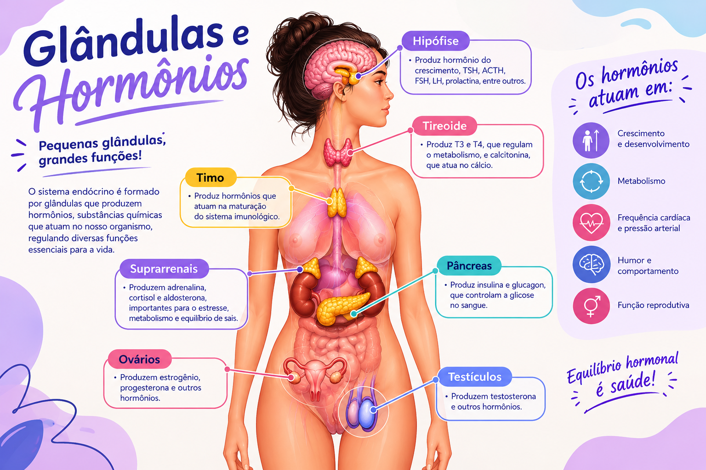

Localizada na base do cérebro, libera hormônios que controlam diferentes funções. O hormônio do crescimento (GH) estimula o desenvolvimento de ossos e tecidos.
Glândulas e hormônios

Hormônios
Os principais hormônios do corpo humano desempenham funções essenciais para o organismo. A insulina e o glucagon
controlam a quantidade de açúcar no sangue, enquanto a adrenalina e o cortisol ajudam o corpo a reagir a situações
de estresse. A melatonina regula o sono, e o hormônio do crescimento (GH) estimula o desenvolvimento dos ossos e
músculos.
Já a tiroxina (T4) controla o metabolismo, enquanto o estrogênio, a progesterona e a testosterona atuam no
desenvolvimento sexual e na reprodução. Outros hormônios, como a ocitocina e a prolactina, participam do parto
e da produção de leite materno.
Localizada na região anterior do pescoço, produz T3 e T4, hormônios que regulam o metabolismo, o gasto energético e a temperatura corporal..
Produz insulina, que ajuda a reduzir a glicemia, e glucagon, que atua para aumentá-la quando necessário.
Situadas sobre os rins, produzem adrenalina, cortisol e aldosterona. A adrenalina participa da resposta rápida a situações de alerta.
Os ovários produzem principalmente estrogênios e progesterona, envolvidos no ciclo menstrual e na reprodução. Os testículos produzem principalmente testosterona, importante para características sexuais e produção de espermatozoides.